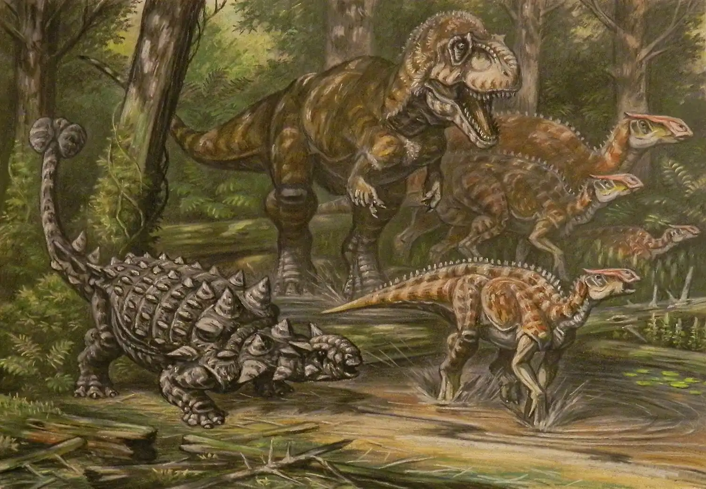

El Cretácico es el tercer y último período y sistema de la Era Mesozoica en la escala temporal geológica. Sucede al Jurásico y precede al Paleógeno (primer período de la Era Cenozoica). Comenzó hace 143 millones de años y terminó hace 66 millones de años. Con una duración de unos 77 millones de años, es el período del eón Fanerozoico más extenso, y es, incluso, más largo que toda la actual Era Cenozoica. Su nombre proviene del latín creta, que significa «tiza», y fue definido como un período independiente por el geólogo belga Jean d'Omalius d'Halloy en 1822, basándose en estratos de la cuenca parisina (Francia). El término Cretáceo, con el que también se le conocía antiguamente, ha quedado completamente obsoleto.
El Cretácico está dividido en dos grandes subunidades: Cretácico inferior y Cretácico superior.
La vida en mares y tierra aparecía como una mezcla de formas modernas y arcaicas, sobre todo de ammonites. Como ocurre con la mayoría de las eras geológicas, el inicio del período es incierto por unos pocos millones de años. Sin embargo, la datación del final del período es relativamente precisa, pues esta se hace coincidir con la de una capa geológica con fuerte presencia de iridio, que parece coincidir con la caída de un meteorito hace 66 millones de años en lo que ahora corresponde con la península de Yucatán y el golfo de México. Este impacto pudo provocar la extinción masiva que ocurrió al final de este período, conocida como el evento K/Pg. Este acontecimiento marca el fin de la Era Mesozoica.
A mediados del Cretácico, se dio la formación de más del 50 % de las reservas mundiales de petróleo que se conocen en nuestros días, de las cuales se destacan las concentraciones localizadas en los alrededores del golfo Pérsico y en la región entre el golfo de México y la costa de Venezuela.